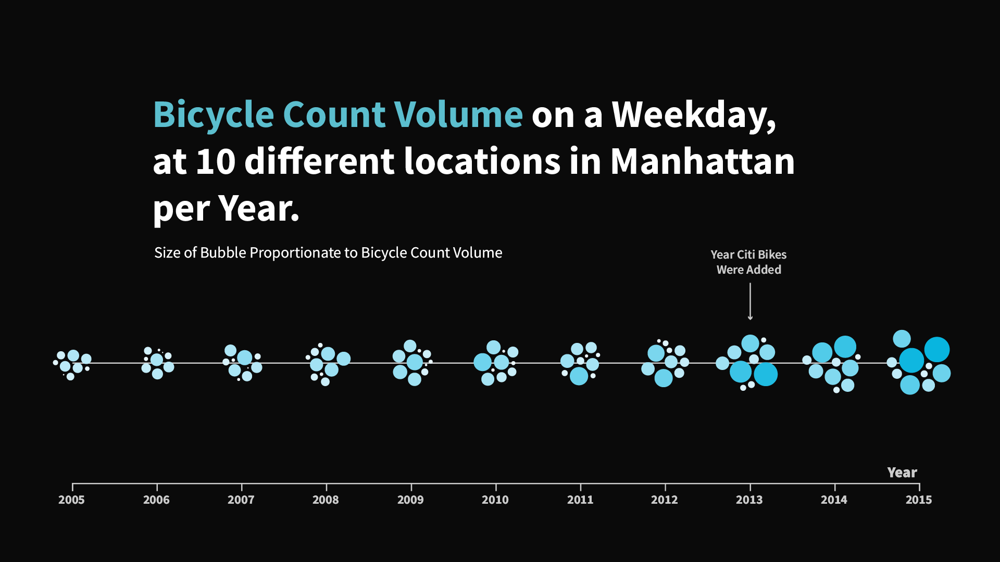
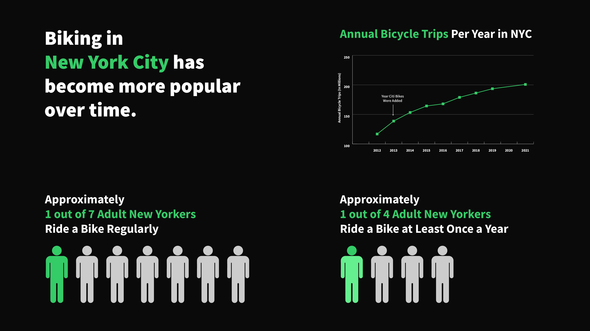
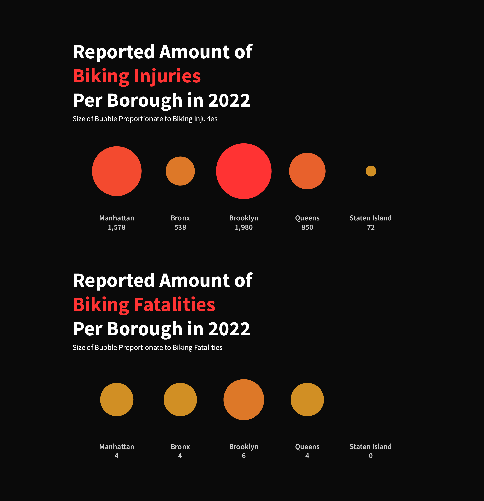
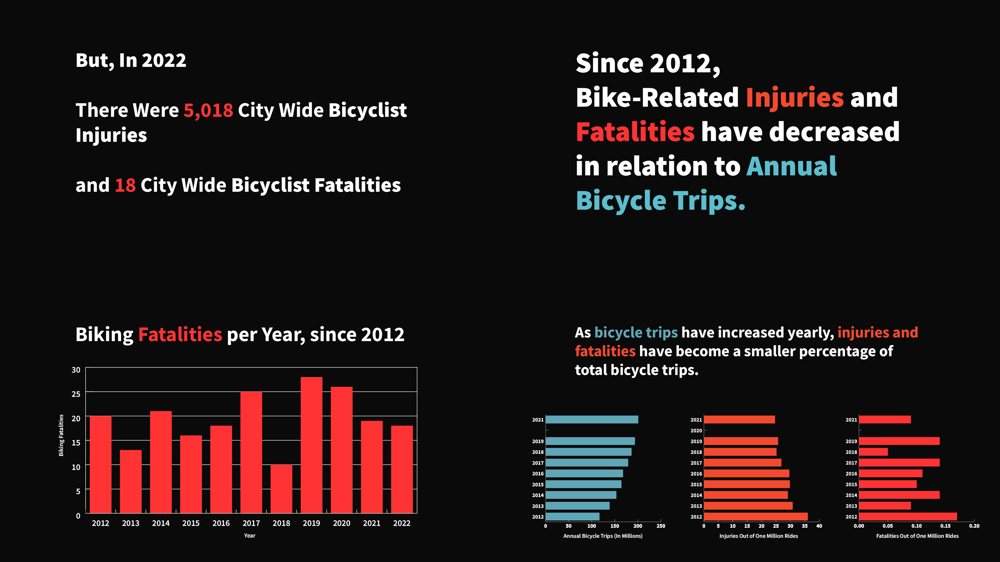
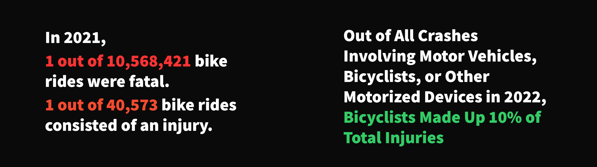
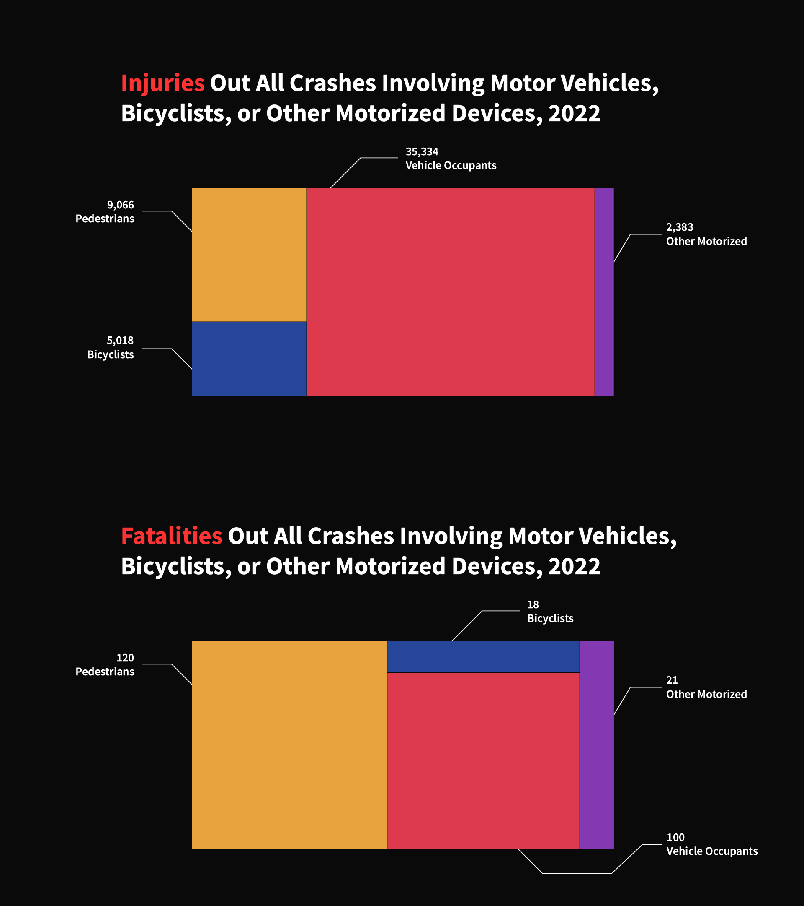
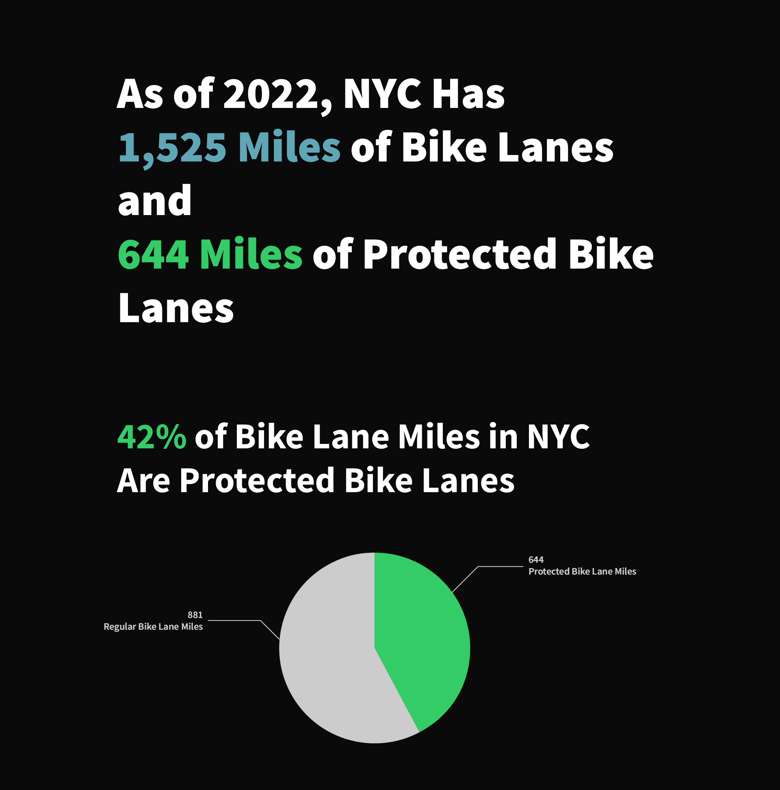

Biking in NYC
October 2023
Data Visualization
This was a project for Information Design, a course taught by Katherine Dillon.
The project is a set of data visualizations aiming to answer the question - how safe is it to bike in NYC? These visualizations were made using publicly available data sets about biking in New York City, revealing information on Bicycle Counts, Bike Lane Amounts, Biking Distribution, and Injury and Fatality Counts throughout the past decade.
The New York City Department of Transportation and the New York City Department of Planning are the sources of the data sets.

The design of the visualizations was intentionally crafted to balance complexity and simplicity. The bicycle count graph, for example, is detailed to emphasize the widespread adoption of biking in the city, while a simpler pictorial graph gives a quick and direct snapshot of biking’s prevalence in the city. These choices were made to ensure accessibility for a broad audience, allowing for both in-depth analysis and immediate understanding.


To represent biking safety, I used a layered approach with the injury and fatality data. The visualizations are designed to be clear and not overwhelming, highlighting that although risks exist, the percentage of cyclists involved in total traffic accidents is relatively small. This design choice aims to provide clarity around the safety aspect without diminishing the importance of the data.



Finally, the project concludes with a design focus on the future of biking. The bike lane count visualizations are presented in a way that signals the positive growth of biking infrastructure, subtly reinforcing the city's commitment to improving biking conditions.
